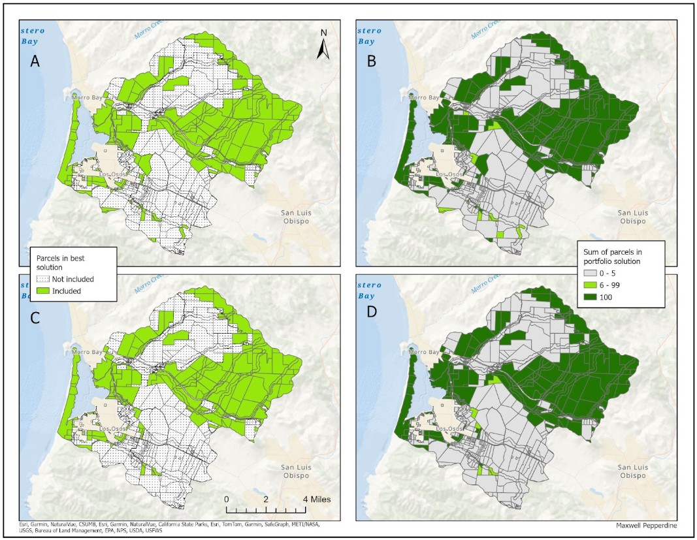

Overview
This analysis is from an assignment in ESM 270 (Conservation Planning) at the Bren School of Environmental Science & Management at the University of California, Santa Barbara. The assignment focused on informing reserve design in the Morro Bay watershed prioritizing special status species. It was required to be limited to two pages, with a figure included, hence the brevity of the write-up. The analysis aimed to identify important planning units in the Morro Bay watershed to include in a conservation reserve under two different settings/problems: (1) considering species with any status in the watershed; (2) considering only endemic, endangered, or threatened species in the watershed.
Background & Problem
Landscapes and reserves are complex socio-ecological systems with various interactions between socioeconomic dynamics, political and governance systems, and natural processes across spatial and temporal scales (Meyfroidt et al., 2022). Because of this, successful planning measures at large scales and the selection of the most important planning units are difficult. To design effective reserve networks that address systematic conservation planning problems holistically, it’s crucial to consider both ecological and social factors. One situation where this kind of analysis is required is the identification of priority parcels in a region to include in a conservation reserve.
Approach
Prioritizr is an R package that guides systematic reserve design and solves various conservation planning problems. Similar to Marxan, but with enhanced flexibility, speed, and reproducibility, it can be used to build a conservation problem, generate a prioritization setting, solve and evaluate it. It’s flexible in design with many different functions that can build and customize conservation planning problems and solutions in a variety of settings. This analysis employs prioritizr to solve a conservation planning problem in the Morro Bay watershed with the goal of identifying priority parcels in the region to include in a conservation reserve under two different settings/problems: (1) considering species with any status in the watershed; (2) considering only endemic, endangered, or threatened species in the watershed.
For both settings, the problem was set up in prioritizr with the same exact inputs other than the filtering of irreplaceable species. All data was obtained from a previous MESM group project focused on the Morro Bay estuary. Planning units were parcel data containing information on the unit id, cost, and status. It’s important to note that some units’ statuses were ‘locked in’ or ‘locked out’, meaning they either had to be included or could not be included in the reserve. Conservation features were defined by the three different settings of species mentioned above and the number of species in each planning unit. For each setting above, two problems were created: one that found the optimal solution, and another that created a portfolio of solutions that were within the top 15% of the optimal solution. After creating the portfolio of solutions, they were summed to examine the selection frequency of each parcel across all 100 runs, essentially identifying which planning units were most important to address the planning problem.
Results
The resulting planning units determined to be included/not included in the best solution under the setting with all species and the setting with only endemic, endangered, and threatened species are shown in Figure 1(A) and Figure 1(C) below, respectively. Under each setting, prioritized planning units appear to be the same for the most part; however, there are a couple of parcels throughout the watershed that were prioritized in Figure 1(A), but not in Figure 1(C). Figure 1(B) and Figure 1(D) portray the results of the summed portfolio solutions within the top 15% of the optimal solution in each setting across 100 runs, representing the parcels most important to address the planning problem. Similarly to Figure 1(A) and Figure 1(C), most of these planning units appear to be the same with all species and the selected species.

Conclusion
Under each setting/problem explored in this analysis, many of the same planning units were selected to include in the optimal solution and reserve design in the Morro Bay watershed. For the few parcels that were included in the setting with all species but not in the setting with endemic, endangered, or threatened species, it’s likely that these species are not known to occur across these units. However, due to reserve dynamics, spillover effects, and adverse, interconnected impacts across landscapes, that doesn’t necessarily mean that these parcels are not important to the conservation of these imperiled species. In an analysis like this striving to solve a specific conservation problem, it’s crucial to consider other aspects of equitable, inclusive conservation planning that are difficult to capture in maximization models. After prioritizing planning units for biodiversity and socioeconomic factors (or before this kind of analysis is done), it’s imperative to engage local communities and a diverse range of stakeholders and voices in the reserve design process.
Acknowledgements
This assignment was created and organized Ashley Larsen, an Associate Professor at the Bren School and the instructor for ESM 270. ESM 270 (Conservation Planning) is offered in the Master of Environmental Science & Management (MESM) program at the Bren School.
References
Meyfroidt, P., de Bremond, A., Ryan, C. M., Archer, E., Aspinall, R., Chhabra, A., Camara, G., Corbera, E., DeFries, R., Díaz, S., Dong, J., Ellis, E. C., Erb, K.-H., Fisher, J. A., Garrett, R. D., Golubiewski, N. E., Grau, H. R., Grove, J. M., Haberl, H., & Heinimann, A. (2022). Ten facts about land systems for sustainability. Proceedings of the National Academy of Sciences, 119(7), e2109217118. https://doi.org/10.1073/pnas.2109217118
Citation
@online{pepperdine2024,
author = {Pepperdine, Maxwell},
title = {Informing Reserve Design in the {Morro} {Bay} {Watershed}},
date = {2024-09-20},
url = {https://maxpepperdine.github.io/posts/2024-09-20-morro-prioritizr/},
langid = {en}
}